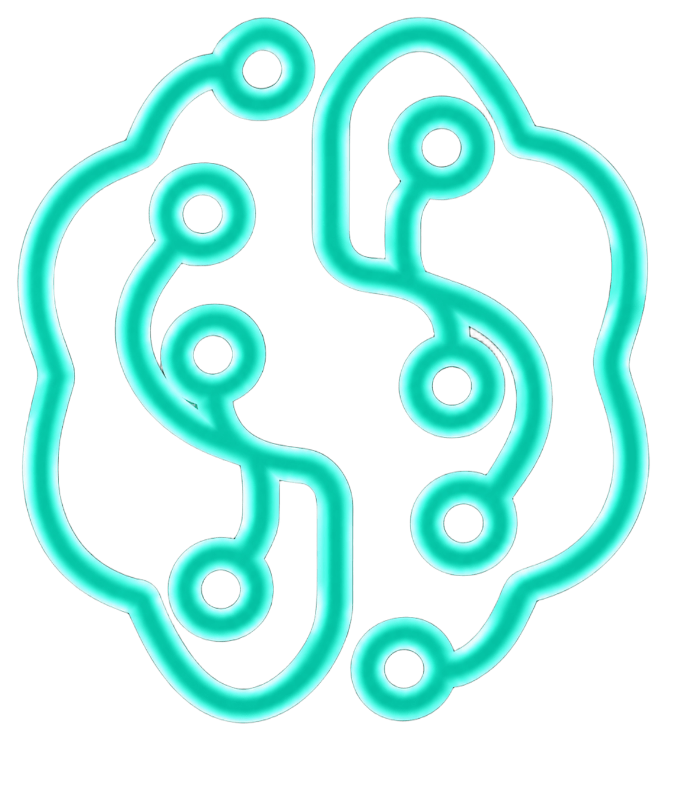
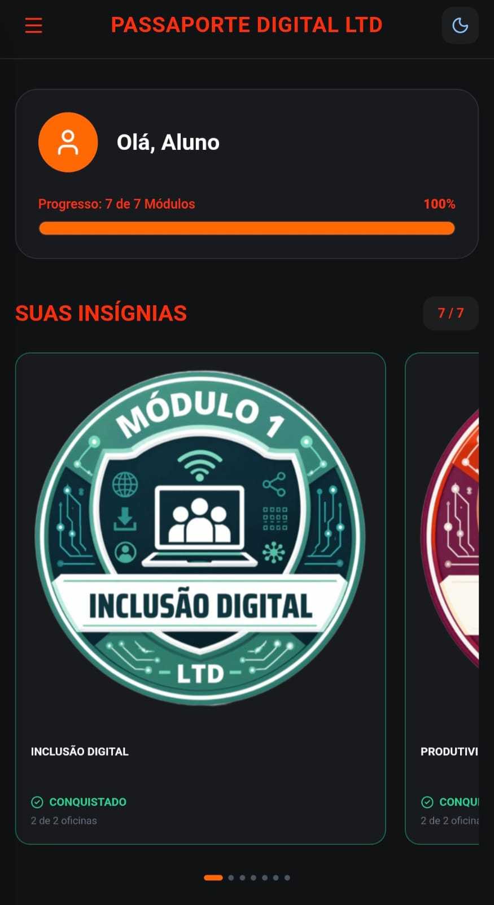
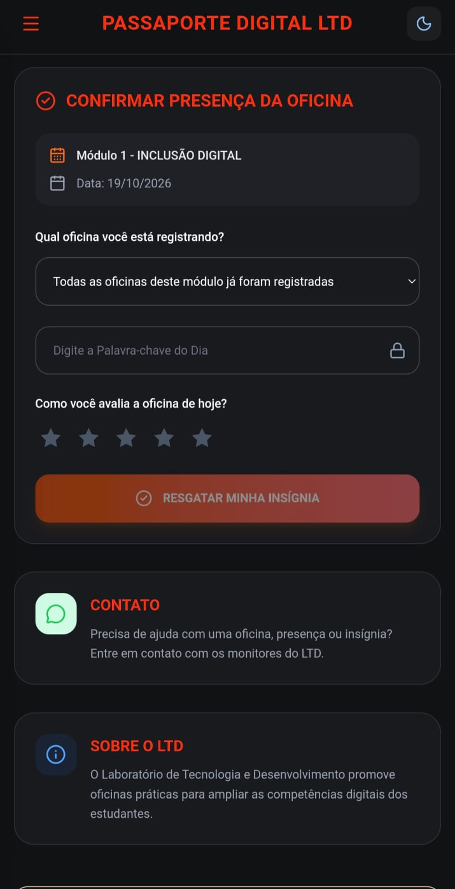
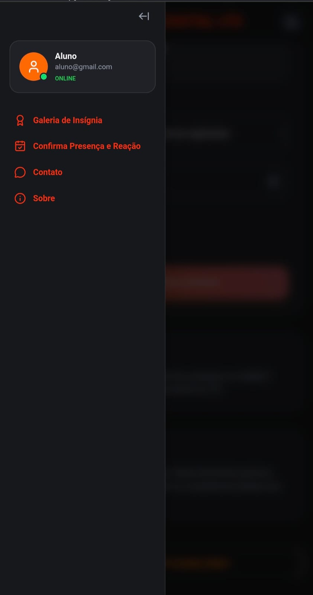
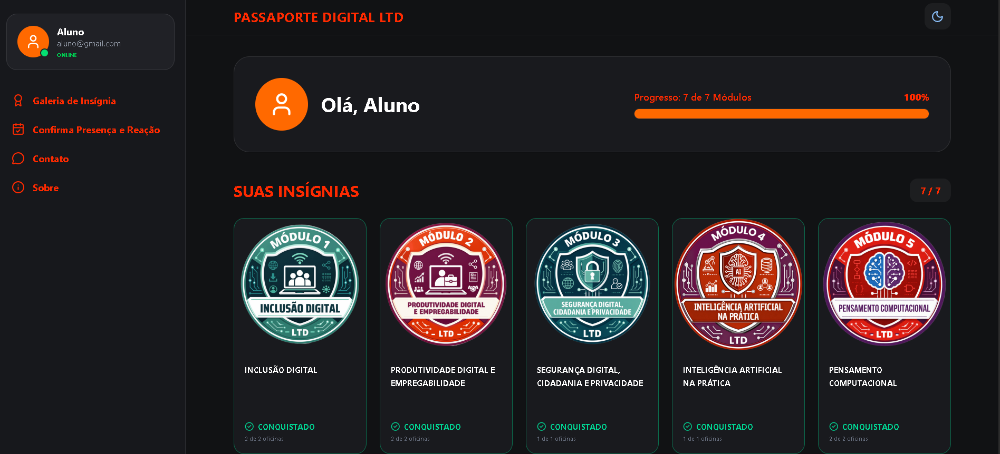
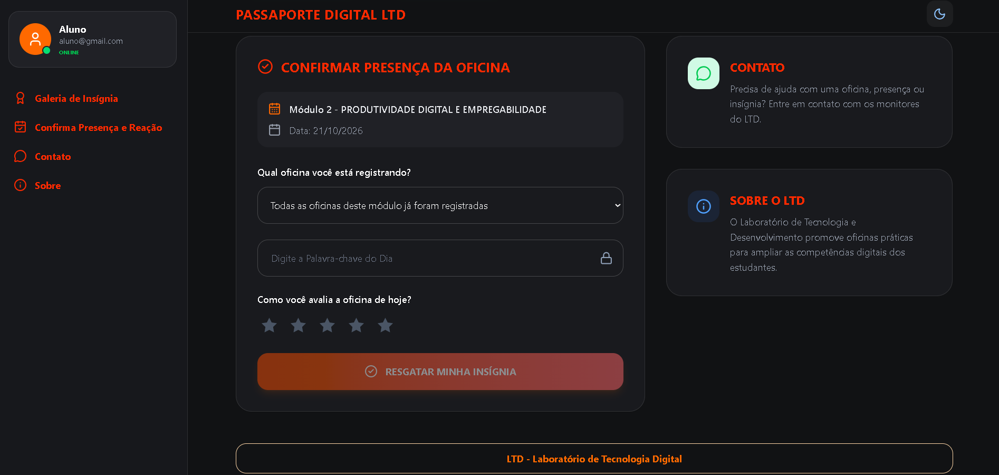
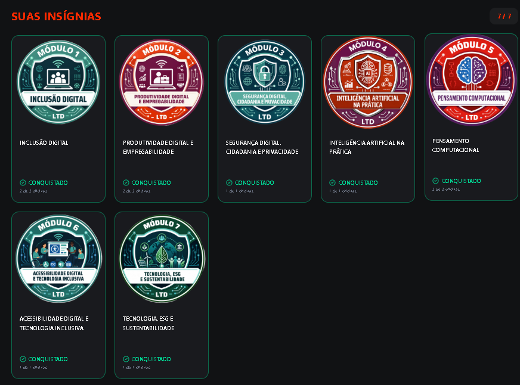

Laboratório de Transformação Digital.
Para quem nasceu conectado, mas ainda tem muito a descobrir.
Sobre o LTD
O Laboratório de Transformação Digital é um projeto idealizado e coordenado por Larissa Garcia e realizado por estudantes dos cursos de Tecnologia da Informação da Facy Wyden.
Apesar de ter nascido na era da tecnologia, a Geração Z ainda enfrenta dificuldades com conceitos básicos de informática. Nosso objetivo é transformar esse cenário, promovendo o letramento digital dos nativos digitais.
Como funciona?
O conteúdo está organizado em 7 módulos que reúnem os principais temas da informática básica. Eles são aplicados ao longo de 10 oficinas práticas, todas criadas e conduzidas pelos próprios discentes.

Passaporte Digital
O Passaporte Digital Ltd é uma plataforma que foi construída com objetivo de ajudar o projeto ltd 2026 à registrar a presença de alunos , coletar feedbacks de reação e disponibilizar uma galeria virtual de insígnias durante as oficinas.
Foi construído pelos discentes dos cursos de Ti a facy Wyden , coordenado por Larissa Garcia
A plataforma trabalha com a ideia de gamificação, como em um jogo cada vez que você avança de fase você desbloqueia um troféu, em cada oficina que o aluno estiver presente ele vai desbloquear e ganhar uma insígnia, o objetivo é fazer com que isso dê ainda mais motivação para o aluno participar.






Equipe de Desenvolvimento
Equipe
PESSOAS QUE FIZERAM O LTD ACONTECER